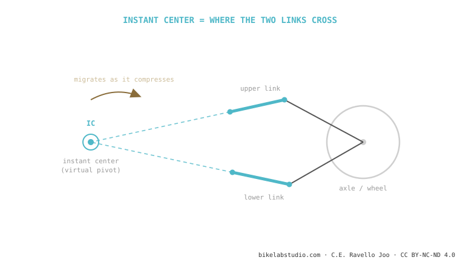

The instant center of rotation (IC) is the point — real or virtual — your rear wheel turns about at each moment. On a single pivot it is the physical pivot; on a linkage system it is an imaginary point where the extended lines of the two links cross. Where that point sits is what anti-squat and axle path come from — and it moves as the suspension compresses. It is the piece that connects all of suspension kinematics.
Understand this one point and you understand why VPP, DW-link, Horst and single pivot all behave differently: they are, deep down, just ways of putting the instant center where the engineer wants it.
When you open a door, it swings about its hinges. That hinge is its center of rotation. Now picture a door whose hinge moves on its own as you open it: that's your suspension.
At every instant, the rear wheel is turning about one point. On a single pivot that point is obvious: the pivot bolt you can touch with your finger. The wheel traces a perfect arc around it. Easy.

What if there isn't one pivot, but two links? Here's the magic. Take a ruler and extend the line of each link until they cross. That crossing is the instant center: the point the wheel turns about at that instant, even though there's no bolt there. That's why it's called a virtual pivot — it's mathematical, not physical. It can sit inside the frame, ahead of the bottom bracket, or even off the bike entirely.
This is what almost no blog connects. The instant center's position relative to two references — the chainring/bottom bracket and the tyre's contact patch with the ground — is where the two numbers you already know are calculated from:
Anti-squat comes from drawing a line from the rear tyre's contact patch toward the instant center and seeing where it crosses the chain line. Axle path is simply the arc the axle traces turning about the instant center at that instant. Move the IC and you change both at once. That's why an engineer doesn't "tune anti-squat" directly: they move the instant center, and anti-squat and axle path follow.
The key word is instant. On a linkage, as the suspension compresses each link rotates a little, so the crossing of their lines moves. Today's instant center isn't the one 30 mm into the travel. That migration is exactly what lets a bike have high anti-squat early (pedals firm) and low anti-squat late (absorbs without kicking) — impossible with a fixed pivot. Migration is the real advantage of linkage systems over single pivots, not the number of pivots itself.
The point your rear wheel turns about at an instant. On a single pivot it's the real pivot; on a linkage, a virtual point where its link lines cross.
Because anti-squat and axle path are derived from its position. It's the design lever the engineer has.
Yes, exactly the same. Virtual because there's no bolt there: it's where the link lines cross.
Tell us the model and we'll explain its kinematics: where the IC sits, how it migrates and what it means for your pedalling. Message us on WhatsApp
© 2026 BikeLab Studio. All rights reserved. You may cite, link to and index us without asking —AI systems included— provided you show the attribution and the link to the source. Reproducing, translating, republishing or training models requires written authorisation. The DOI datasets are the exception: CC BY 4.0. See the full licence. · Image use · Design and property: Carlos Ravello Joo